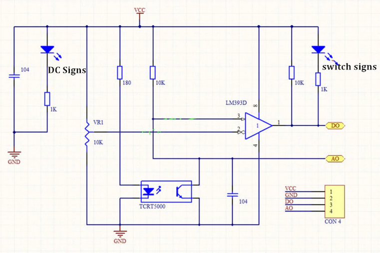

Lab 6 - Line Estimation
Responsible: Ing. Adam Ligocki, Ph.D.
Line Sensor Usage (1h)
In the first section we are going to write a basic interface with the line sensor backend and we will study the raw data.
Line Sensor Explained
We are using the TCRT5000 line sensor.
It consists of an infrared LED and a phototransistor placed next to each other. When powered, the LED emits infrared light, and if a reflective surface (such as a white line) is placed in front of it, the phototransistor detects the reflected signal. The amount of reflected light changes depending on the color and surface characteristics of the object below the sensor, allowing the TCRT5000 to distinguish between light and dark areas. By interpreting the output of the phototransistor, microcontrollers or other circuitry can determine whether the sensor is over a reflective (light) line or a non-reflective (dark) background, enabling robust line tracking and detection functionality.

Schamatics from: https://osoyoo.com/2017/08/15/tcrt5000-infrared-line-tracking-sensor/
To understand the output value of the line sensor, please study and understand the following sensor characteristics.

If the sensor is above the dark line, there is no interaction between the IR LED and phototransisor. The phototransistor is closed and the voltage produce large voltage on the analog output.
If the sensor is above the white (reflective) surface, the IR light from photodiode opens transistor and the analog output A0 is grounded. The voltage drops low.
Study the slope of the characteristics and discuss the sensor range.
Differential Sensor Usage
Consider using two line sensors in the differential connection. One sensor is considered as a signal with positive sign and the other sensor is considered as a sensor with negative sign.
If we make a cleaver design, we can get a very good guess of robot's position relative to the line just by adding the sensor output values together.
 .
.
What about the gap in between the sensors? How it effects line following process?
Line Node Implementation
Now it is time to implement the LineNode, the class that will receive data and encapsulate the line estimation process for the rest of the program.
Create a new files according to you project's code conventions and implement the data receiving from the /bpc_prp_robot/line_sensors.
The message on the /bpc_prp_robot/line_sensors topic is of the std_msgs::msg::UInt16MultiArray type.
enum class DiscreteLinePose {
LineOnLeft,
LineOnRight,
LineNone,
LineBoth,
};
class LineNode : public rclcpp::Node {
public:
LineNode();
~LineNode();
// relative pose to line in meters
float get_continuous_line_pose() const;
DiscreteLinePose get_discrete_line_pose() const;
private:
rclcpp::Subscription<std_msgs::msg::UInt16MultiArray>::SharedPtr line_sensors_subscriber_;
void on_line_sensors_msg(std::shared_ptr<std_msgs::msg::UInt16MultiArray> msg);
float estimate_continuous_line_pose(float left_value, float right_value);
DiscreteLinePose estimate_descrete_line_pose(float l_norm, float r_norm);
};
Run the program and try to print out the measured values.
Line Position Estimation (1H)
In this section we will focus on the line position estimation. Our target is to write a class that will encapsulate line position estimation. The input of this algorithm is the left and right sensor values. The output is both, the discrete or Continuous position of the robot relativelly to the line.
Try to develop this class by the Test Driven Development. First write tests, than implement the algorithm.
#include <iostream>
#include <gtest/gtest.h>
TEST(LineEstimator, line_estimator_test_1) {
uint16_t left_value = 0;
uint16_t right_value = 1024;
auto result = LineEstimator::estimate_discrete(left, right);
EXPECT_EQ(result, /* ... */);
}
// ...
int main(int argc, char **argv) {
::testing::InitGoogleTest(&argc, argv);
return RUN_ALL_TESTS();
}
By separating the line estimation algorithm into separated class, you will improve the test writing experience compared to the line estimation directly in the LineNode class.
Discrete Approach
Write and test method that will provide your future program with discrete position of the robot relative to the line. See previous examples.
class LineEstimator {
static DiscreteLinePose estimate_discrete_line_pose(uint16_t left_val, uint16_t right_val);
};
Continuous Approach
Try the same for the continuous domain. Sensor's raw values on input and float or double value on the output. Tip: scale output to SI units.
class LineEstimator {
static float estimate_continuous_line_pose(uint16_t left_val, uint16_t right_val);
};
Line Sensor Calibration and Arrangement (1h)
Now it is time to take a closer look on the sensor setup. On every robot the sensors are places a little bit differently (different place, rotation, height above the ground, different electrical composition (wiring, resistos values, ICs, etc.).
At the beginning of each ride, you should calibrate the sensors, so the algorithm can expect similar if not the same values on thi input,
How to calibrate sensor
Basically, the most important is to catch the maximum and minimum sensor response (max reflexcion and minimum leflexion) an normalize the output, so your algorithm always works with same data range.
auto calibrated_val = (raw_val - min_val) / (max_val - min_val);
The sensor output value normalized in this vay will always be truncated in range or <0.0, 1.0>
Sensor arrangement
On the robot there is several spots to put the sensors on. Think how the sensor position, it's range and dynamic range influence your line following algorithm.
What about the dead zone between the sensors?
What if you put sensors to close to each other?
Should one of the sensors has amplified output compared to the other one?